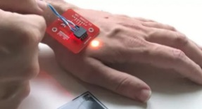

|
"¡Las reacciones que recibo de los cajeros no tienen precio!" dice Paumen, un guardia de seguridad de los Paises Bajos.
Puede pagar con la mano porque
|

Patrick Paumen tiene un microchip bajo la piel de su mano izquierda y se enciende cuando entra en contacto con un punto de pago electrónico
Nada Kakabadse, profesora de política gobernanza y ética en la Escuela de Negocios Henley de la Universidad de
Reading, también se muestra cautelosa sobre el futuro de los chips integrados más avanzados. "Hay un lado oscuro
en la tecnología que |